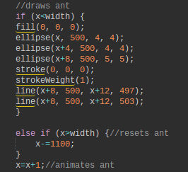
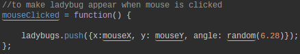
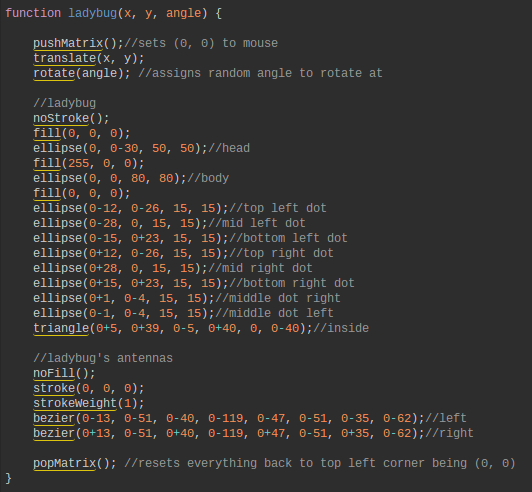
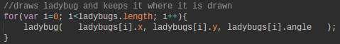

What I Made and How it Works
I created a generative art page that has an ant going across the screen and
ladybugs appearing onclick
in a nature setting. I did this by using functions,
loops, conditionals, and other tools from JavaScript processing.
Try clicking on the generative art above!
Specifics of the Code
CONDITIONALS
If/Else statements:
If/else statements make code run based off of whether a certain condition is true or false.
I used if/else statements to animate the ant and have it keep moving across the screen on a loop.

The first part of the code uses an if statement to draw the ant and make it move from one side of the screen to the other,
saying, "if the x position is less than the width of the canvas, then keep moving the ant." The next part
of the code uses a else if statement to reset the ant back to the left side of the screen once the ant reaches the end of the
canvas, saying, "if the x position of the ant is greater than the width, then set the x back to 0."
FUNCTIONS
Functions are used to run a code of block when called. For my project, I used functions that were already part of processing and
functions that I created myself.
Processing function:

I used this code to make a ladybug appear when the function was called. The function was called every time the mouse was clicked.
My function:

I used this code to draw the ladybug when the function was called. This function was called within the mouseClicked function, in order
to make a ladybug be drawn when the mouse was clicked.
LOOPS
There are two main types of loops: for loops and while loops. One of the limitations of the program we were using was that while loops would
crash c9 because it went on forever, so I only used for loops. I used a for loop to draw a ladybug when the mouse was clicked and keep the ladybug
on the screen. Here is an image of the code I used:

initiator:
My initiator is i=0. The initiator simply declares the value of the variable used in the for loop.
condition:
My condition is i<ladybugs.length. This sets the condition that allows the for loop to run the codeblock. It makes sure that i is less than
the length of the array. If it isn't true, then the loop will not continue!
increments:
My increment is i++. This adds 1 to i each time after the codeblock has been run through.
Choices Made and Why
For our generative art page, we had the freedom to create anything we wanted as long as we met the following requirments: at least 1 loop, at least 1 conditional,
at least 1 function we created ourselves, and 1 way to interact. Because there weren't many guidelines, we had a lot of choices to make! The following is a quick summary of what I did
for each requirement and why I did it:
Function
One of the most important parts of my generative art page is my ladybug function because it is what actually draws the ladybug. I chose to make a function that draws
the ladybug so that, when I create the code to make the ladybug appear, I could simply call the ladybug function. I chose to make a ladybug because it is a very geometric
insect in that I could sufficiently represent it using simple shapes that are available to me in JS Processing. Here is an image of what the ladybug function drew on a
white background:

Interaction
Once I had my ladubug function done, I had to figure out what the viewer would have to do when they saw it. I was really inspired by our final checkpoint that showed us
how to make a drawing of our own appear on click (to see a my project checkpoint click here), so I decided that I will utilize the mouseClicked function offered in JS Processing
to make my ladybug appear on click. Here is a gif of the ladybug function at work with the mouseClicked function:

Conditional
Now that my ladybug was appearing at the click of the mouse, I felt like it was still missing something. At first, I tried making a loop that created a line of black dots to
represent ants going across the nature scene, but it didn't feel quite right. So, I instead decided to animate a single ant going across the screen to create movenment because
I realized that the page lacked movement. I used a loop to make sure that the ant would reset to the left side of the screen once it reached the right side of the screen, keeping it travelling constantly.
This, however, lead to problems with keeping my ladybugs appearing ( which I will explain in depth later), but I was able to fix that with the use of objects, arrays, for loops, and Mr. Hesby :)
Loop
As previously mentioned, keeping my ladybug on the screen required arrays, objects, and a for loop. Luckily I had not had an idea as to what to create that would use a for loop yet,
so, in a way, the ladybug issue worked to my advantage. I had two options at that point: come up with another way to use a for loop or leave it as is with the ladybug code requiring the
use of a for loop. Due to the page looking a bit crowded already, and to avoid creating any more arrays, I decided that it would be best to keep the simple theme and leave it as is.
Something to Remember
While making this generative art page, there were many obstacles to overcome, but the biggest obstacle that offered a huge learning experience by far was my ant/ladybug problem that required
creating an array so that every element of my page would function properly. Here is a walkthrough of what the problem was and what were the steps I took to solve it.
The Problem
As mentioned earlier, adding an animation with the ant caused a problem: my ladybugs would appear but they would immediatly get drawn over by the background. The solution to this was to create an array
for the ladybugs so that each time one was drawn, they would be assigned their own coordinates and be their own individual object that would continue to be drawn over the background. This, however, was easier
said than done. Here is a breakdown of the steps I took to solve the problem
Step 1: Creating an Array
The first step is to create an array at the top of your code. It should look like this:
var ladybugs=[];
"ladybugs" is the name that I used--you can replace it with your own when you are creating your own array. Some terms you will want to take note of later are that "myArr.length" finds the
length of the array, and "mrArr.push" pushes something into the end of the array.
Step 2: Push on mouseClicked
Next, you need to go to your mouseClicked function and write the following code:
ladybugs.push({x:mouseX, y: mouseY, angle: random(6.28)});
I have "angle" as a third parameter because I wanted the ladybug to be facing a random spot everytime instead of all of them facing the same direction. If you don't want/need yours to be rotating, then
only need the first two parameters for the x and y position. Another thing to remember: rotation is measured with radians (which is why the value in "random()" is 6.28. Don't forget the curly brackets.
Step 3: Creating a For Loop
The final step is creating a for loop inside your draw function that will draw ladybugs at the designated x, y, and rotated from the objects in the array. The code I used looked like this:
for(var i=0; i<ladybugs.length; i++){ladybug( ladybugs[i].x, ladybugs[i].y, ladybugs[i].angle );}
You may have some extra problems specific to your own code, as I did, especially if it is your first time using arrays. Other than that, you're done!
Next Steps
If I had more time, I would learn how to make multiple ants go across the screen, and learn how to make one follow the mouse. I would also see if there was a way to make the lady bugs move once they are generated.
The final thing that I would try to do is allow the viewer to press a button on the keyboard to change the setting from day to night and vise versa.